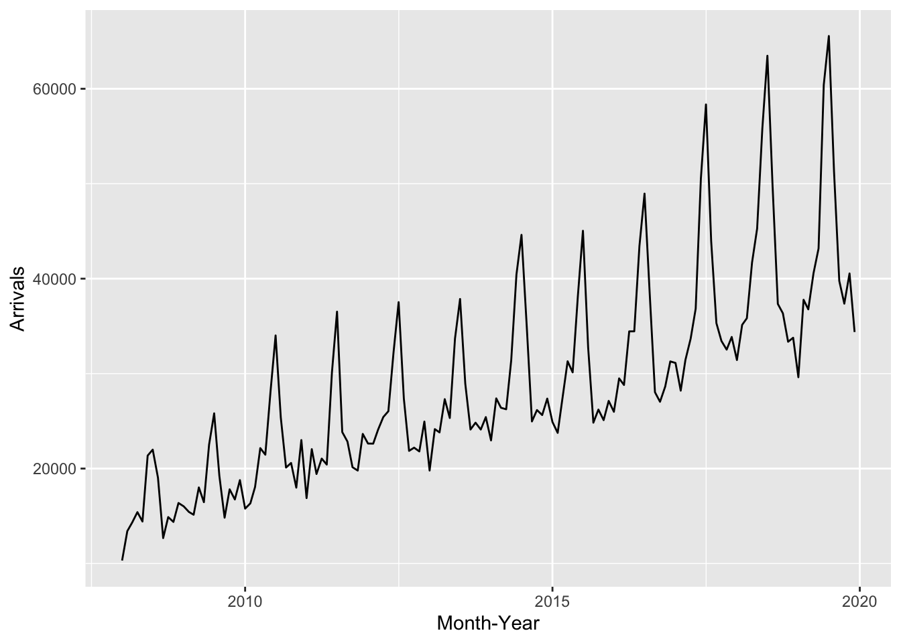
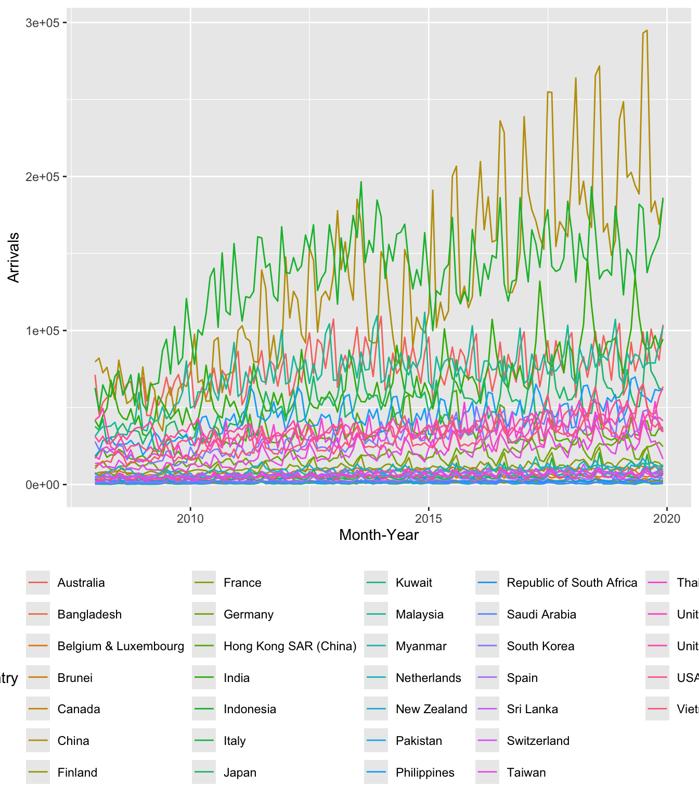
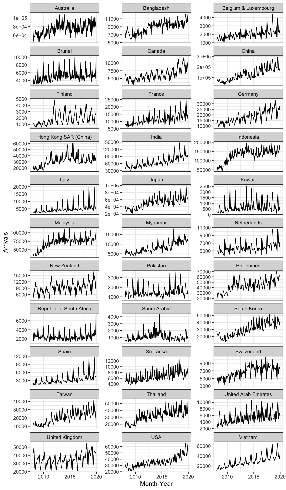
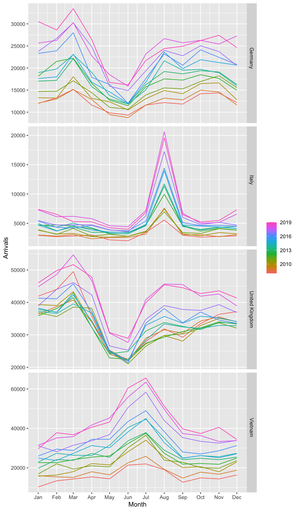
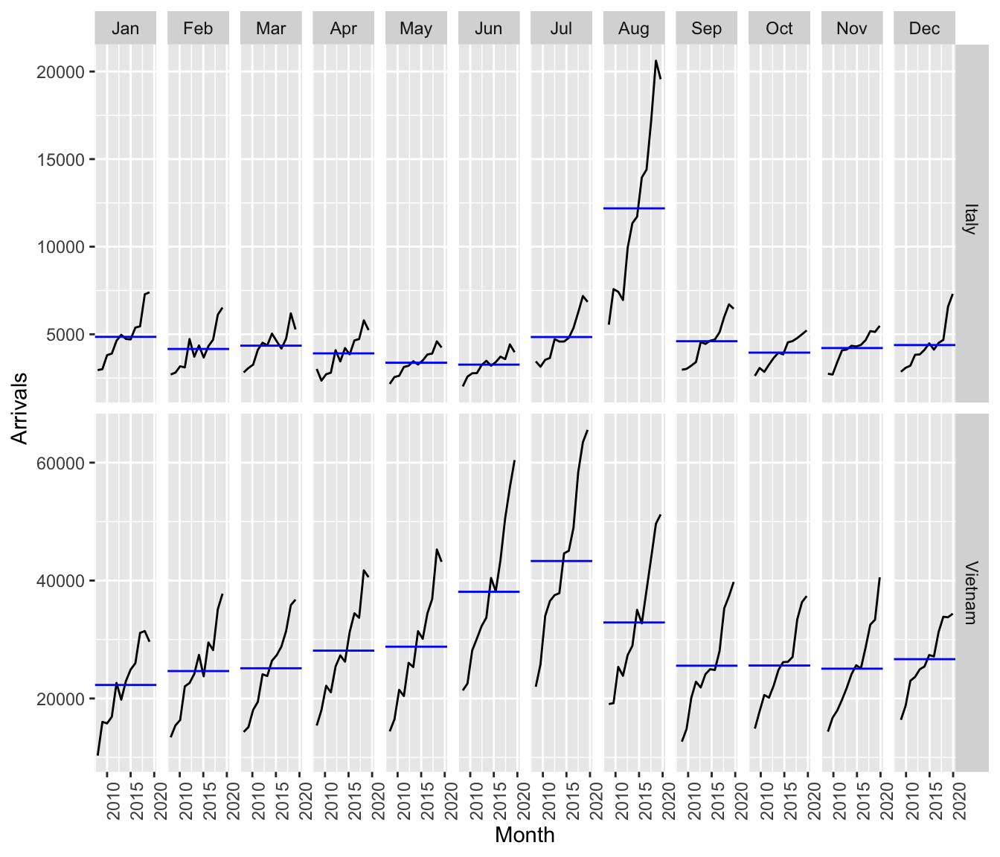
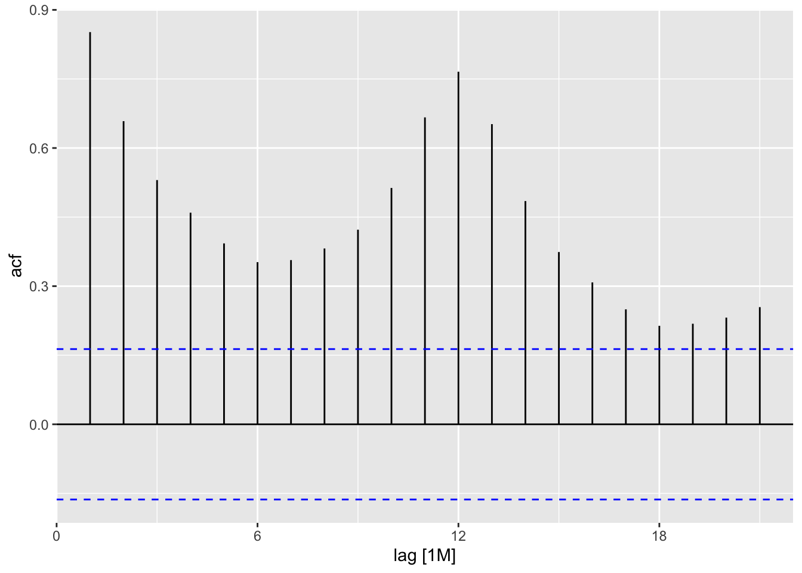
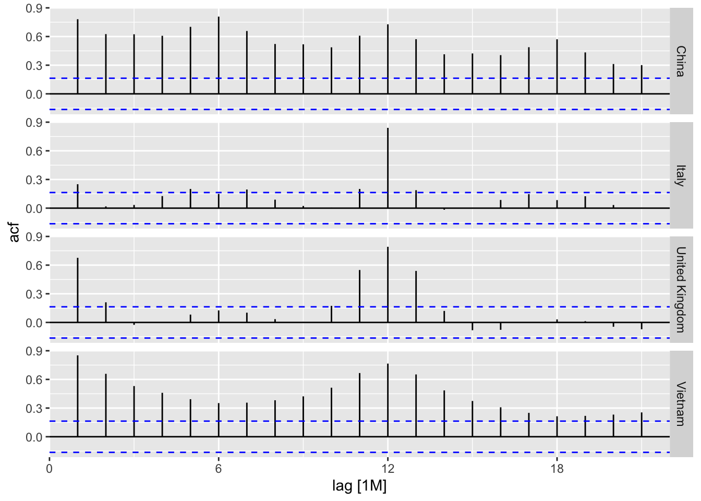
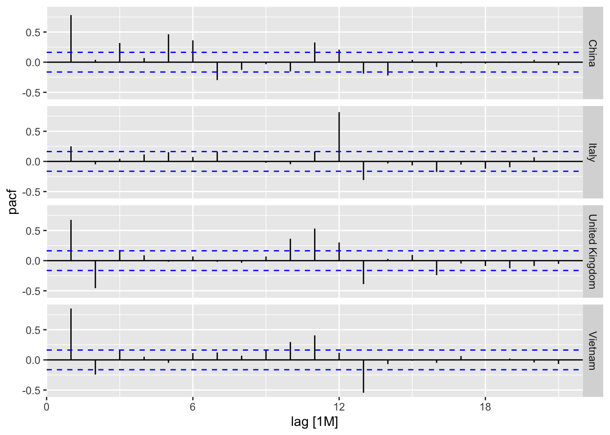
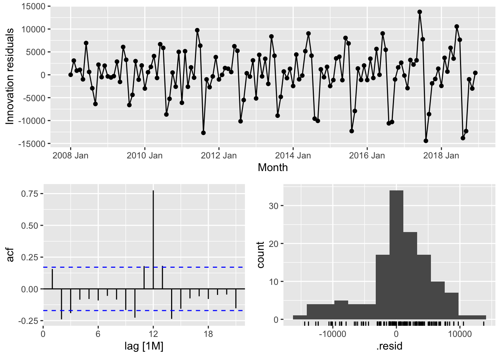
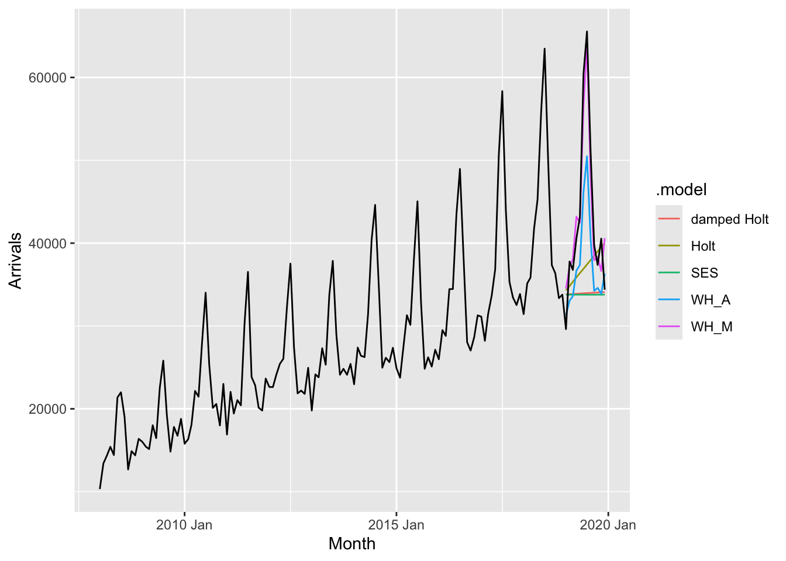

pacman::p_load(readr,tidyverse, tsibble, feasts, fable, seasonal)In-class Exercise 07: Visualizing, Analyzing, and Forecasting Time Series Data: tidyverts methods
1 Install and Load the R Packages
2 Data Preparation
2.1 Importing the Data
ts_data <- read_csv(
"data/visitor_arrivals_by_air.csv")dmy() of lubridate package is used to convert data type of Month-Year field from Character to Date.
ts_data$`Month-Year` <- dmy(
ts_data$`Month-Year`)2.2 Conventional base ts object versus tibble object
Convert to ts object after cleaning the data.
ts_data_ts <- ts(ts_data)
class (ts_data_ts)[1] "mts" "ts" "matrix" "array" 2.3 Converting tibble object to tsibble object
ts_tsibble <- ts_data %>%
mutate(Month = yearmonth(`Month-Year`)) %>%
as_tsibble(index = `Month`)
class (ts_tsibble)[1] "tbl_ts" "tbl_df" "tbl" "data.frame"3 Visualising Time-series Data
We need to organise the data frame from wide to long format by using pivot_longer() of tidyr package as shown below.
ts_longer <- ts_data %>%
pivot_longer(cols = c(2:34),
names_to = "Country",
values_to = "Arrivals")3.1 Visualising single time-series: ggplot2 methods
ts_longer %>%
filter(Country == "Vietnam") %>%
ggplot(aes(x = `Month-Year`,
y = Arrivals))+
geom_line(size = 0.5)
3.2 Plotting multiple time-series data with ggplot2 methods
ggplot(data = ts_longer,
aes(x = `Month-Year`,
y = Arrivals,
color = Country))+
geom_line(size = 0.5) +
theme(legend.position = "bottom",
legend.box.spacing = unit(0.5, "cm"))
ggplot(data = ts_longer,
aes(x = `Month-Year`,
y = Arrivals))+
geom_line(size = 0.5) +
facet_wrap(~ Country,
ncol = 3,
scales = "free_y") +
theme_bw()
4 Visual Analysis of Time-series Data
tsibble_longer <- ts_tsibble %>%
pivot_longer(cols = c(2:34),
names_to = "Country",
values_to = "Arrivals")4.1 Visual Analysis of Seasonality with Seasonal Plot
tsibble_longer %>%
filter(Country == "Italy" |
Country == "Vietnam" |
Country == "United Kingdom" |
Country == "Germany") %>%
gg_season(Arrivals)
4.2 Visual Analysis of Seasonality with Cycle Plot
tsibble_longer %>%
filter(Country == "Vietnam" |
Country == "Italy") %>%
gg_subseries(Arrivals)
Visitors from Vietnam has an increasing trend. July and August is quite high. For Italy, for most of the months it is at a low level (hover around 5000). Only in the month of August, there is a sharp increase.
5 Time series Analysis - decomposition
5.1 Single time series decomposition
Autocorrelation Plot: Whether the time series is related to previous month. Correlation among time series(T) and their lags (T-1)
tsibble_longer %>%
filter(`Country` == "Vietnam") %>%
ACF(Arrivals) %>%
autoplot()
5.2 Multiple time-series decomposition
tsibble_longer %>%
filter(`Country` == "Vietnam" |
`Country` == "Italy" |
`Country` == "United Kingdom" |
`Country` == "China") %>%
ACF(Arrivals) %>%
autoplot()
Autocorrelation of China is in a 6 month period.
Look at 95% confidence interval (above the blue line): For China and Vietnam, most of the cases are statistically significant.
There are both seasonality and trend in China and Vietnam.
tsibble_longer %>%
filter(`Country` == "Vietnam" |
`Country` == "Italy" |
`Country` == "United Kingdom" |
`Country` == "China") %>%
PACF(Arrivals) %>%
autoplot()
Partial Autocorrelation: Further decompose the autocorrelation, Compare autocorrelation from previous time lag versus next time lag. Inverse(negative): visitor arrival decrease.
For UK, in lag 2 significantly reduced.
6 Visual STL Diagnostics
6.1 Visual STL diagnostics with feasts
tsibble_longer %>%
filter(`Country` == "Vietnam") %>%
model(stl = STL(Arrivals)) %>%
components() %>%
autoplot()
Remainder: white noise. No clear pattern
If Remainder still give patterns, it is not good.
7 Visual Forecasting
7.1 Time Series Data Sampling
Intentionally keep back some data based on time, must follow the sequence.
2 Levels: Holdout and Training
vietnam_ts <- tsibble_longer %>%
filter(Country == "Vietnam") %>%
mutate(Type = if_else(
`Month-Year` >= "2019-01-01",
"Hold-out", "Training"))vietnam_train <- vietnam_ts %>%
filter(`Month-Year` < "2019-01-01")7.2 Fitting forecasting models
fit_ses <- vietnam_train %>%
model(ETS(Arrivals ~ error("A")
+ trend("N")
+ season("N")))
gg_tsresiduals(fit_ses)
fit_ETS <- vietnam_train %>%
model(`SES` = ETS(Arrivals ~ error("A") +
trend("N") +
season("N")),
`Holt`= ETS(Arrivals ~ error("A") +
trend("A") +
season("N")),
`damped Holt` =
ETS(Arrivals ~ error("A") +
trend("Ad") +
season("N")),
`WH_A` = ETS(
Arrivals ~ error("A") +
trend("A") +
season("A")),
`WH_M` = ETS(Arrivals ~ error("M")
+ trend("A")
+ season("M"))
)fit_ETS %>%
tidy()# A tibble: 45 × 4
Country .model term estimate
<chr> <chr> <chr> <dbl>
1 Vietnam SES alpha 1.00
2 Vietnam SES l[0] 10313.
3 Vietnam Holt alpha 1.00
4 Vietnam Holt beta 0.000100
5 Vietnam Holt l[0] 13673.
6 Vietnam Holt b[0] 526.
7 Vietnam damped Holt alpha 1.00
8 Vietnam damped Holt beta 0.000110
9 Vietnam damped Holt phi 0.978
10 Vietnam damped Holt l[0] 13257.
# ℹ 35 more rows7.3 Model Comparison
fit_ETS %>%
report()# A tibble: 5 × 10
Country .model sigma2 log_lik AIC AICc BIC MSE AMSE MAE
<chr> <chr> <dbl> <dbl> <dbl> <dbl> <dbl> <dbl> <dbl> <dbl>
1 Vietnam SES 2.79e+7 -1453. 2912. 2912. 2920. 27515844. 5.99e7 3.91e+3
2 Vietnam Holt 2.86e+7 -1453. 2917. 2917. 2931. 27718599. 6.03e7 3.92e+3
3 Vietnam damped Holt 2.86e+7 -1453. 2918. 2919. 2935. 27556629. 5.97e7 3.92e+3
4 Vietnam WH_A 5.33e+6 -1336. 2706. 2711. 2755. 4684271. 8.56e6 1.72e+3
5 Vietnam WH_M 4.55e-3 -1300. 2635. 2640. 2684. 3046059. 3.42e6 5.20e-27.4 Forecasting future values
fit_ETS %>%
forecast(h = "12 months") %>%
autoplot(vietnam_ts,
level = NULL)